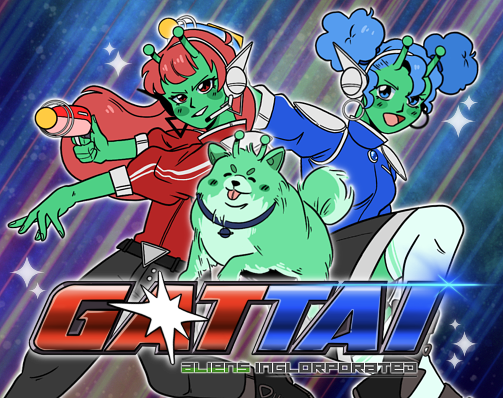
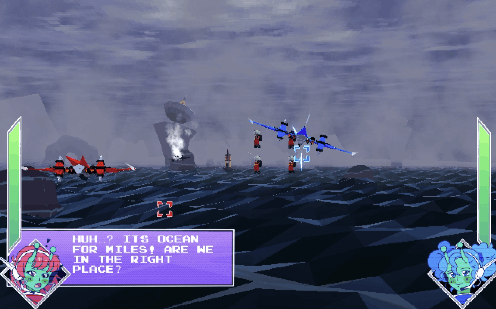
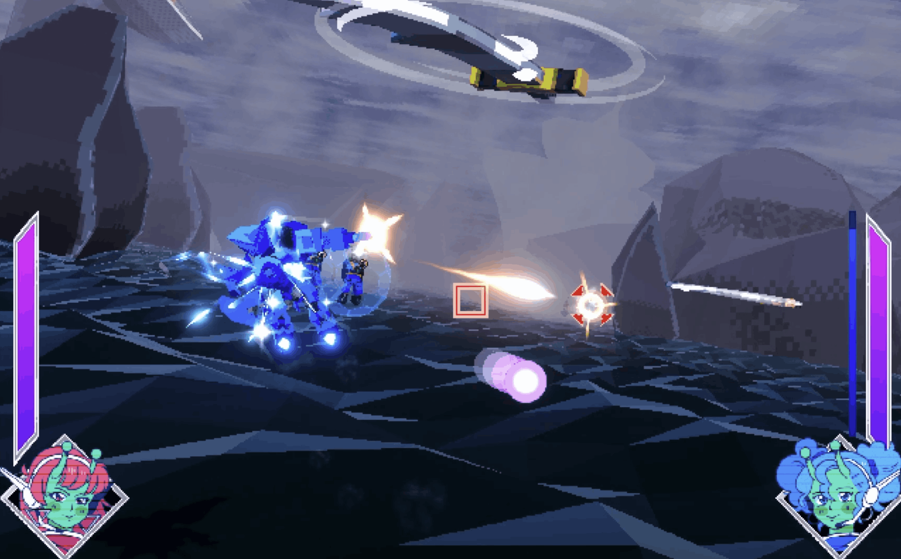
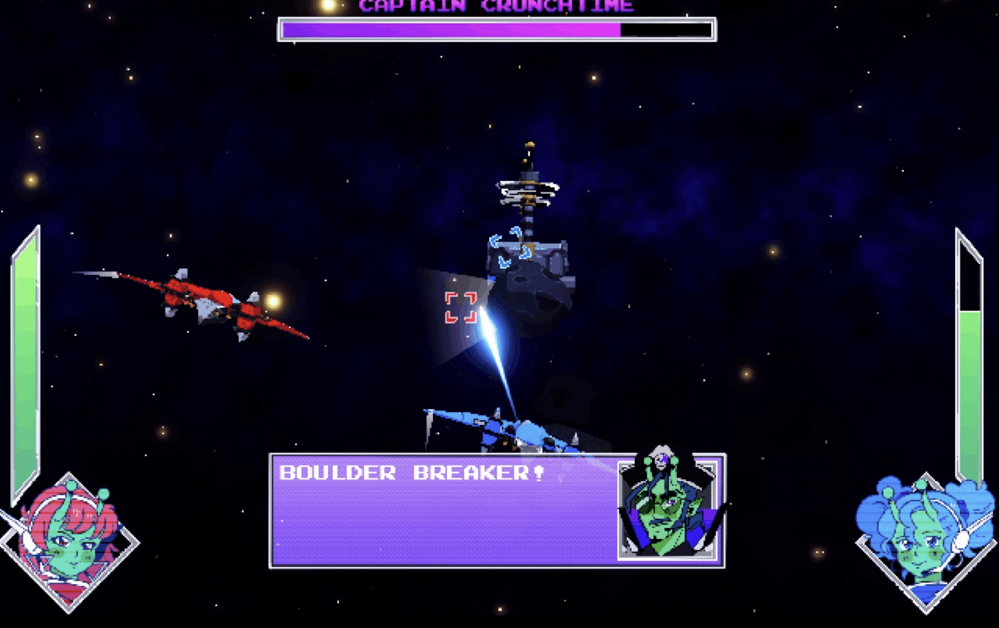

Gattai

Project Type
Ubisoft GameLabs 2026 Entry
Technologies
Unity, C#, Git, Jira
Date Created
April 2026
Links
Team Members
Brody Silva - Gameplay Programmer, Git Manager
Seth Riddensdale - Frontend Programmer
Zax Nathanson - Designer, Product Owner
Adam Siegel - Designer, Producer
Charlie Lopez - Artist
Cameron Metters - Artist
Siena Forbeck - Artist
Amara Schwarz Escotto - Sound Designer
Project Demo
A preview video of the game that was submitted to the competition.
About the Project
GATTAI is a cooperative on-rails shooter made in Unity for the Ubisoft GameLabs Competition 2026. It was built over 10 weeks by an 8-person agile scrum team. The game focuses on fast arcade combat, polished characters and controls, and a retro transforming mech fantasy where players have to work together to fight enemies and save the galaxy!
Features
- Cooperative gameplay built around readable enemy encounters, player feedback, and lovable characters
- Custom Unity tools and inspectors that helped designers tune enemies, bosses, and gameplay data without programmer support
- Polished UI, input handling, controller rebinding, menus, shaders, and game-feel systems for a competition-ready vertical slice
Development Process
GATTAI was developed for this Ubisoft-led competition using Unity, version control through Git, and project management through Jira. My work focused on gameplay systems, designer tools, gameplay UI/UX implementation, input-handling systems, and shaders. Throughout development, I collaborated closely with designers to build systems that were reusable, easy to iterate on, and flexible enough to support our rapid changes within our short production timeline. Our project went on to win Best Art Direction and Production and Best Quality of 3C's ($10,000), and was separately nominated for 6 other awards.
Design Challenges
The biggest design challenge was the players combining into one mech. Lots of player testing revealed that the biggest problems were a lack of information conveyed to the player and the mech being overpowered.
- The mech and its bullets would change colors depending on who was moving the mech and who was shooting
- Mech sections, where the players would combine and face higher numbers of enemies, were hardwired into levels so that the overpowered mech would still face difficulty
- On-screen UI would fade in and out to focus the players on being in the mech rather than their original ships
Screenshots

The beginning of the water level.

Fighting enemies in the mech.

Taking down Captain Crunchtime!
What I Learned
- Building programmer-facing and designer-facing systems that would support rapid iteration in a short development cycle (things were changed a lot!)
- How to structure gameplay data, enemy behavior, boss tools, UI, and input for a larger team
- Communicating technical constraints and optimizing pipelines in an agile scrum environment with designers, artists, sound, and production
- Polishing a game for an official competition submission, with rigorous bug reporting and testing that was led by me